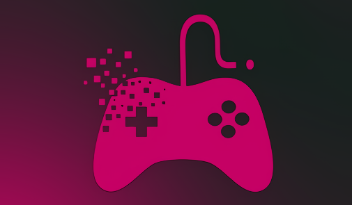

Seiring dengan perkembangan teknologi yang kian pesat, ngegame kini tak hanya aktivitas untuk mengisi waktu luang, tapi bagi beberapa orang, merupakan sebuah profesi yang cukup menjanjikan dengan pendapatan bisa mencapai miliaran rupiah.
Selain kemajuan teknologi dan makin canggihnya perangkat pendukung untuk ngegame, semakin banyaknya kompetisi game profesional jadi salah satu faktor meningkatnya tren gamer di kalangan masyarakat, terutama kalangan muda.
Di Indonesia, kejayaan game online mulai terasa ketika memasuki awal tahun 2000-an. Saat itu game yang dimainkan dengan perangkat komputer seperti DotA, League of Legends, hingga StarCraft mengalami perkembangan yang pesat. Turnamen-turnamen besar pun mulai diselenggarakan dengan hadiah yang menggiurkan, mulai dari perangkat game terbaru hingga uang tunai.
Hingga pada 2018, bertepatan dengan perhelatan Asian Games, esport secara resmi diperkenalkan sebagai salah satu cabang olahraga yang dipertandingkan. Saat itu Asian Games menyajikan enam game yang diperlombakan, antara lain Arena of Valor, Clash Royale, Hearthstone, StarCraft 2, PES 2018, dan LoL.
Dengan berbagai keuntungan yang disuguhkan, bukan tidak mungkin di masa depan gamers menjadi salah satu profesi yang paling diminati.
Sumber : Kumparan.com

Tujuan Komunitas Game
Saat ini sobat gamers mungkin sedang bergabung dengan komunitas esports, suatu perkumpulan berisi orang-orang yang se-hobi dengan kalian. Namun, tak sedikit juga orang yang bertanya atau bahkan menyepelekan, untuk apa gamers bergabung dengan komunitas? Apa sih gunanya?
Baca Selengkapnya
Manfaat Video Game
Bermain game sering didakwa memberik dampak negatif untuk kesehatan fisik dan psikis pemainnya. Bermain game dianggap sebagai kegiatan unfaedah atau tidak bermanfaat dan hanya membuang waktu. Tapi, apa benar demikian?
Baca Selengkapnya